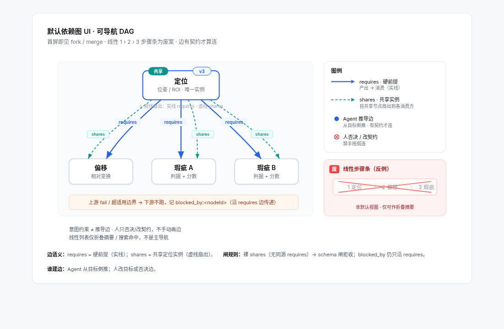
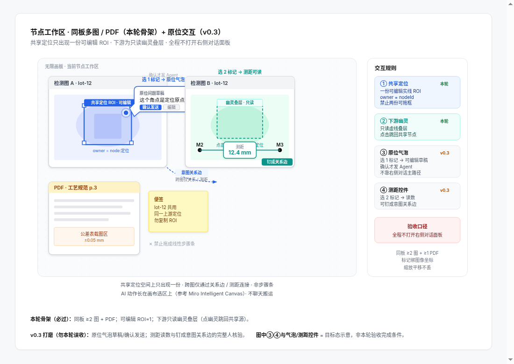

AgentCV 产品需求文档（PRD）v0.2
v0.2方案 B · blocked_by 只沿 requiresAgent 原生 · AgentOps等用户确认后再调度
| 字段 | 内容 |
|---|
| 产品 | AgentCV · Agent 驱动的视觉检测协作平台 |
| 版本 | v0.2（相对 v0.1 的结构性重构） |
| 状态 | 群共识锁定稿 · 可供工程拆分与验收 |
| 日期 | 2026-10-27（Asia/Shanghai） |
| 语言 | 简体中文（群共识用语） |
| 文档边界 | 本轮只定产品契约与验收；不写代码、不调 Codex、不改产品实现 |
| 示意图 | figs/fig1-dependency-dag. · figs/fig2-node-workspace. |
0. 阅读路线与相对 v0.1 的变更说明
0.1 建议阅读顺序
- 产品核心与原则（为何存在）
- 从资料开始（输入是什么）
- 依赖图模型 + Fig1（默认 UI 与图执行）
- 画板与节点工作区 + Fig2（人如何在板上核验）
- 解释契约与 schema 闸（Agent 输出如何入图）
- 工程与版本（Tauri / AgentRuntime / AgentOps / Git）
- 验收表（含 Agent 原生 G1–G3 · 无界面路径 · 可勾选、可测）
- 待确认 / 非目标 · 附录
0.2 v0.1 → v0.2：明确废弃项
| v0.1 概念 | v0.2 处置 |
|---|
| 左侧线性导航 / 七步流程条（1 › 2 › 3 …） | 废案。不得作为默认产品 UI，也不得作为方案推荐形态。仅允许在文档中作为反例出现（见 Fig1 红色「废」标注）。 |
| 「先走完固定阶段再进依赖图」 | 废案。默认首屏即为依赖 DAG。列表折叠仅为次级视图。 |
| 右侧常驻对话面板作为主操作路径 | 废案。对话面板默认收起；核心流程须可全程不打开右侧对话完成。 |
| Electron 桌面壳 | 废案。桌面壳锁定为 Tauri only。 |
| 把具体 Agent 品牌写进对象模型 | 废案。对象模型只认抽象 AgentRuntime；品牌名仅出现在「现状」小节。 |
0.2.1 勘误（2026-10-27）
- 边语义（依赖图/CV/产品已锁方案 B）：删「软扇出」；
shares = 共享实例扇出。凡 shares 消费方必须同时存在同源 requires，否则 schema 闸拒收（裸 shares 不入库）。blocked_by 只沿 requires 传。不采用方案 A（沿 shares 传播）。 - §8.1 调度：改为「等用户确认后再调度」；本 PRD 不预支仓库策略，也不把「已授权开工」写进待确认默认。
- Agent 原生（已锁，收进主验收）：实质操作不依赖图形界面、不需要点鼠标。
AgentOps/CLI 与 UI 消费同一对象模型；G1–G3 与无界面夹具见 §7.7–§7.9，不得只躺在 addendum。第 4 章范围钉死见 §4.0。
0.3 v0.2 锁定方向（一句话）
工程师在画板上表达意图（图像 + 标记 + 关系）；Agent 反推前提、提议方案、跑试验；人在同一块板上核验。默认 UI 是意图画布 + 依赖 DAG，不是线性步骤。Agent 原生：无窗口亦可经 AgentOps/CLI 建图、过闸、跑回归、读报告。
1. 产品核心与原则
1.1 产品定义
AgentCV 是面向视觉检测方案设计的桌面协作平台：人用画板表达「要测什么、对象与关系是什么」；Agent 把意图翻译成可追溯的依赖图（节点 + 边 + 解释契约）；本地图执行器按依赖跑通试验；人在板上用叠层、气泡与关系钉完成核验与否决。
1.2 对比痛点（海康 VM 等传统工具）
| 痛点 | AgentCV 原则 |
|---|
| Windows 绑定 / 加密狗 | 离线可打开历史推导；无加密狗也可复盘 |
| 「拖岛」式孤立算子、难复用 | 共享定位 / fork / merge；边有契约才算连 |
| 无 Git、难审、难回退 | 解释落盘 + Git 可 diff；节点 ID / 边集 / 边界字段稳定 |
| 聊天式黑箱调参 | 弱化右侧对话；意图与证据留在画板 |
1.3 五条不可退让的原则
- 画板意图优先：未预置的检测诉求也可用图像、标记、关系提出；例子不是能力边界。
- Agent 推导依赖：人定义目的与取舍；Agent 负责提前提、提议边/节点、跑试验；人可否决 Agent 边。
- 节点可追溯：每个正式节点必须带非空的
rationale / params / applicability，经 JSON Schema 闸后才能入图。 - 尽量不用右侧对话：核心路径（表达意图 → 看依赖图 → 在板上核验 → 接受/否决）不依赖打开聊天面板。
- Agent 原生（AgentOps）：建图 / schema 闸 / 跑回归 / 读
blocked_by 与结果报告，必须可无窗口、不点鼠标完成；UI 只消费同一 AgentOps，禁止旁路写盘。主验收见 §7.7（G1–G3）。
1.4 意图 ≠ 推导（视觉与权限）
| 来源 | 含义 | UI |
|---|
| 人类意图标记 | 人画的框、钉、问题气泡、关系 | 与 Agent 提议视觉区分；权威高于 Agent 提议 |
| Agent 提议的边/节点 | 待 schema 闸与人确认后才入正式图 | 可单独否决边；未过闸 → invalid_proposal，0 节点写入 |
2. 从资料开始
先弄清图像代表什么，再谈能测什么。资料不足可以探索，但不可冒充正式量测。
2.1 可导入对象
- 检测图像：单张 / 多选 / 文件夹；记录像素尺度与成像配置。
- 参考资料：介绍、图纸、3D、规格、PDF/文档；可钉到同一画板。
- 已知结果：OK / NG 类型 / 未知；可附标注。已知标签只作验证依据，不得偷用来生成待验证结果。
2.2 成像与量纲
- 记录像元尺寸、镜头倍率、分辨率、裁切/缩放、畸变与实测校准；标明来源与不确定性。
- 无有效校准时只报 px；不同成像配置的图不可默认共用物理尺度。
- 改倍率、缩放或配置时，提示尺度需重核，并沿依赖标记受影响下游。
2.3 空项目入口（产品行为）
中央入口提供「导入图片」「导入图片文件夹」；导入后列表可居左，支持选图、重命名、标已知判定。画板随即成为意图表达面，而非强制进入线性向导。
3. 依赖图模型（默认 UI）
默认视图 = 依赖 DAG。 线性步骤条是废案。列表折叠仅为次级导航。

Fig1：可导航 DAG；requires 实线硬前提、shares 共享实例扇出（虚线）+「共享」徽标/版本；红色「废」标注为线性步骤反例；blocked_by 只沿 requires 传递（Fig1 双线：shares 扇出须并行同源 requires）。
3.1 节点粒度
- 节点回答可独立审核的结论（例如「lid 定位可用」「相对偏移判定」「表面瑕疵判定」），不是「一个函数一个节点」。
- 节点可分组、拆合；证据与结果身份不随版面折叠而改变。
- 存在性与定位可同组出现，但不得混为同一结论字段。
3.2 边类型（契约）
| 边类型 | 语义 | 视觉（已锁） | 方向 |
|---|
requires | 硬前提：生产者失败或越界 → 消费者不可当有效结果 | 蓝色实线箭头 | 产出 → 消费 |
shares | 共享实例扇出（典型：共享定位）；多消费者引用同一共享成果的版本化扇出，不是失败传播边 | 青色虚线；共享节点带「共享」徽标 + 版本号 | 共享源 → 消费者 |
- 边必须过契约才算「连上」；无契约的自由连线不算正式依赖。
- Agent 提议的边与人确认/否决后的边在状态上可区分；人可否决 Agent 边而不删意图标记。
- 方案 B（已锁）：凡
shares 消费方必须同时存在同源 requires（与 Fig1 双线扇出一致）；裸 shares → schema 闸 invalid_proposal，0 边/节点写入。blocked_by 只沿 requires。不采用方案 A。
3.3 失败传播：blocked_by
- 本地图执行器（须能在 离线 / 无 Codex 条件下工作）在以下情况只沿
requires 写入 blocked_by：
- 共享定位失败（消费者侧须已有同源 requires；裸 shares 工程不得进入执行）； - 结果落在适用边界外（OOB / out of applicability bounds）； - 上游版本失效且下游未用当前版本重算。
blocked_by 必须可追查到：哪个上游节点、哪条 requires 边、哪个边界字段。 - 被阻塞节点不得继续冒充当前有效结果；旧结果可保留对照。
3.4 Fork / Merge / 共享定位
- Fork：同一上游可扇出多个下游（偏移 + 瑕疵同时依赖定位）。
- Merge：多前提汇入同一判定节点。
- 共享定位：一份可编辑 ROI / pose；下游节点只读引用，并在各自画板上显示只读幽灵 ROI 叠层（见第 4 章）。
- 上游定位升版（如 v3 → v4）→ 受影响下游标「待重算」；不得继续把旧版当当前有效。
3.5 次级视图
- 列表折叠、按状态筛选、搜索节点：允许，但不得替代 DAG 作为默认首屏。
- 禁止产品文案或默认 onboarding 把用户导向「完成第 1 步 → 第 2 步 → …」式线性向导。
4. 画板与节点工作区
同一块板承载多图、文档、标记、幽灵叠层与原位交互；风格对标 Miro / FigJam / tldraw / Heptabase / AFFiNE 一类无限画布，但语义绑定依赖图节点。

Fig2：同板 ≥2 检测图 + PDF；共享定位一份可编辑 ROI + 下游只读幽灵叠层；原位问题气泡与测距/关系钉；验收要求核心流不打开右侧对话。
4.0 本轮范围钉死（第 4 章）
| 能力 | 本轮（v0.2 必做） | 标 v0.3 |
|---|
| 同板 ≥2 检测图 / PDF | 必做（骨架可用） | — |
| 幽灵 ROI 叠层骨架 | 必做（共享源可编、下游只读幽灵可见） | — |
| 意图约束（标记 / 测距 / 关系）经 AgentOps 写入同一对象模型 | 必做（无界面可写可读；UI 非唯一入口） | — |
| 原位问题气泡完整人核验交互（草稿→确认发送、拖动/收合等打磨） | — | v0.3 |
| 测距 / 关系钉完整人核验交互打磨 | — | v0.3 |
钉死说明：原位气泡与测距钉是人核验 UI，不是 Agent 唯一入口。本轮必须保证意图约束可走 API/CLI 写入同一对象模型；无界面回归不依赖点气泡。完整交互打磨标 v0.3，不得口头「或」。
4.1 同板内容
- 同一节点工作区至少可同时展示 ≥2 张检测图像，并钉 PDF/文档。
- 切换节点时保留：图片集、缩放、视野、选中标记、气泡位置与草稿；返回时恢复，不重新「找位置」。
- 图像操作：滚轮以指针为中心缩放；工具用图示 + 提示；避免靠纵向滚动找主操作。
4.2 共享定位与幽灵 ROI
- 共享定位节点上的 ROI / pose：唯一可编辑实例。
- 所有通过
shares / requires 引用该定位的下游节点：显示只读幽灵 ROI 叠层（不可在下游直接改几何；改必须回到共享源）。 - 共享源变更 → 下游幽灵更新或标失效，并触发依赖传播。
4.3 原位问题气泡与关系钉（对象模型本轮 · UI 打磨 v0.3）
- 本轮（对象模型 + AgentOps）：标记、测距、关系钉作为意图约束对象，必须可经
AgentOps/CLI 写入 / 查询 / 删除，与 UI 写入同一持久化模型；无界面回归可断言这些约束存在且生效。 - v0.3（人核验 UI 打磨）：选中标记后唤起问题气泡（草稿可由 Agent 辅助，人确认后才发送；不自动发送）；回答在相连气泡中展示叠图/数值，可拖动/收合。
- v0.3：板上距离 / 关系钉交互打磨——选中两对象生成尺寸或关系控件；定义可见可改；未校准则报 px。
- 询问默认不授权改正式方案；Agent 可提议，正式入图须过 schema 闸与可核验状态。
4.4 右侧对话面板
- 默认收起。
- 验收硬条件：表达意图 → 看 DAG → 在板上核验共享定位/幽灵 ROI → 接受或否决提议，全程可不打开右侧对话面板。
- 对话仅作补充通道（长文说明、跨项目提问等），不得成为唯一可达路径。
5. 解释契约与 schema 闸
Agent（经 AgentRuntime）输出的提案在进入项目图之前，必须通过 schema 闸。不过闸 → 状态 invalid_proposal，0 个节点写入图；字段级错误写入日志。
5.1 仅允许三种节点种类
| Kind | 必备语义（示意） | 说明 |
|---|
Locate | `{ pose \ | roi, method, params, bounds, … }` | 定位 / ROI；可被共享 |
Offset | { transform, refNodeId, … } | 相对位姿 / 偏移；须引用定位类前提 |
Defect | { metric, threshold, … } | 瑕疵 / 度量判定 |
- 禁止在同一提案包中混合无法拆清的复合 kind（例如「找 ROI 并判划痕」捆成一个节点）。此类包 →
invalid_proposal，0 写入。 - 种类集合在本 PRD 冻结为上述三种；扩展新 kind 须另开 PRD 修订，不得静默加入。
5.2 每个节点的「三件套」（非空 + JSON Schema）
无论何种 kind，每个拟写入节点必须同时具备非空：
rationale：为何用该方法 / 为何选该结构（须能指向证据或试验，不得仅写「适合找边」）。 params：实际生效参数及来源（含可改值与生效值）。 applicability：适用边界（反例、误差、失效条件与处置）。
缺任一字段、类型不符、或未通过项目 JSON Schema → 整包拒绝写入。
5.3 边界触发与 OOB
- 执行期若结果触及 / 超出
applicability 边界，图执行器标记 OOB，并只沿 requires 向下游写 blocked_by。 - 局部失效不得被节点级「总 PASS」掩盖。
5.4 Schema 闸验收（必须可测 · 须无界面）
S1–S5 必须有无界面单测 / CLI；不得「只有点画板才能触发闸」。判据以退出码与落盘日志为准。
| # | 场景 | 期望 |
|---|
| S1 | 故意提交混合包「找 ROI 并判划痕」 | invalid_proposal；0 节点写入 |
| S2 | 缺 rationale / params / applicability 任一的 mock 提案 | 单元测试失败（闸拒绝） |
| S3 | 边界夹具集触发 OOB | 下游 100% 获得 blocked_by |
| S4 | 字段级错误 | 日志含字段路径与原因；图结构不变 |
| S5 | 仅有 shares、无同源 requires 的边提案 | invalid_proposal；0 写入 |
5.5 解释原则（承接 v0.1 仍有效部分）
- 规划前：假设与比较计划可见。
- 执行中：真实产物落盘。
- 执行后：以观察做决定；不得用预先写好的理由替代事后核对。
- 执行成功、证据充分、符合规格：三个状态分开，不用一个 PASS 混合。
6. 工程与版本
6.1 桌面壳
- 仅 Tauri。不引入 Electron，不把 Electron 列为备选实现。
6.2 Agent 路径：抽象接口 vs 现状
产品契约：AgentRuntime（写入对象模型）
输入：
- 意图约束（画板标记、关系、人类否决记录、成像/规格约束）
- 当前图快照（节点、边、版本、blocked_by）
输出：
- 提议边：requires | shares
- 每节点：kind ∈ {Locate, Offset, Defect}
+ rationale / params / applicability
+ 步骤边界字段（供闸与回归报告）
- 提供方可替换：pi+Codex / 直连 Responses API / 其他本地 shell 等。
- 验收：换成 mock runtime 后，同一项目的边集 + 节点 schema 单元测试仍通过；节点 ID、边集、步骤边界字段、回归报告格式不变。
现状（事实陈述，非产品品牌）
- 当前实现路径：pi-agent 驱动 Codex。
- 品牌名（pi、Codex 等）只写在本「现状」小节，不进入对象模型字段名、UI 主文案或 schema kind。
6.3 可解释性与 Git > 换模型
- 任一 runtime 必须把 rationale / params / bounds（applicability）持久化到节点。
- 项目落盘须
git diff 可审：节点与边的结构化变更对人类可读。 - 离线 / 无加密狗 可打开历史推导做复盘与审查。
- 换模型不得破坏：节点 ID 稳定性、边集语义、边界字段、回归报告格式。
6.4 版本与失效
- 共享节点展示版本号；升版触发下游「待重算」。
- 正式采用与讨论层、试验层分开；讨论标注不得自动升格为正式节点。
6.5 AgentOps（Agent 原生操作面）
产品是 Agent 原生：实质操作不依赖图形界面、不需要点鼠标。界面只是同一 API 的可选视图。
本轮须暴露的可编程面（至少模块 + CLI，可单测；不绑死具体 RPC）：
- 图读写：load / save；list/get nodes & edges；validate（含方案 B 闸，裸
shares 拒）。 - 图编辑：add/remove/revise node；propose/accept/reject；意图约束（标记 / 测距 / 关系）写入同一对象模型。
- 执行：run graph / run node；读 runs、
blocked_by、stale、OOB。 - 回归与报告：图集×节点回归 → 矩阵 + 落盘
report.{json,html,png,csv…}。 - 闭环：
AgentRuntime.propose 不直接写图；经 applyProposal / reject* 确认后写入。
硬约束：UI 只调用上述 API；禁止「只有点按钮才能跑 / 才能写盘」的旁路。主验收见 §7.7–§7.9。
7. 验收表（可勾选 · 可测）
下列条目来自群共识锁定项；工程拆分时每条应对应可自动化或可脚本化检查。勾选表示「已定义且可测」，不代表当前软件已实现。 Agent 原生 G1–G3、CV / 依赖图无界面路径为本轮主验收（§7.7–§7.9），须收进本表，不得只躺在 addendum。
7.1 产品核心与默认 UI
| ID | 验收项 | 判定方式 | 状态 |
|---|
| A1 | 默认首屏为依赖 DAG，而非线性 1›2›3 步骤条 | UI 规格 + 截图对比 Fig1；代码中无默认线性向导路由 | ☐ |
| A2 | 线性步骤条仅作为废案反例出现，不出现在产品推荐路径 | 文案/引导审查 | ☐ |
| A3 | 列表折叠为次级视图，可切回 DAG | 交互走查 | ☐ |
| A4 | 人类意图标记与 Agent 提议边/节点视觉可区分 | 设计评审 + 截图 | ☐ |
| A5 | 人可否决单条 Agent 边且保留意图标记 | 交互用例 | ☐ |
| A6 | 核心流全程不打开右侧对话即可完成 | 脚本化走查 / 录屏清单（对照 Fig2） | ☐ |
7.2 依赖图与执行器
| ID | 验收项 | 判定方式 | 状态 |
|---|
| B1 | 存在 requires（蓝实线）与 shares（青虚线 + 共享徽标/版本） | UI + 序列化 schema | ☐ |
| B2 | fork / merge / 共享定位可用 | 固定样例项目跑通 | ☐ |
| B3 | 共享定位失败 → 只沿 同源 requires 写 blocked_by；裸 shares 不得入库 | 单元 / 集成测试 | ☐ |
| B4 | 适用边界 OOB → 下游 blocked_by 100% | 边界夹具集 | ☐ |
| B5 | 图执行器在离线、无 Codex 条件下可完成 blocked_by 传播 | 断网 / mock runtime 环境测试 | ☐ |
| B6 | 上游共享定位升版 → 下游标待重算，旧结果不得充当前有效 | 版本夹具 | ☐ |
| B7 | 凡 shares 必有同源 requires；否则闸拒 | schema 单测 | ☐ |
7.3 画板工作区（对照 §4.0 范围）
| ID | 验收项 | 判定方式 | 状态 |
|---|
| C1 | 本轮：同板 ≥2 检测图 + 可钉 PDF/文档 | 功能用例 | ☐ |
| C2 | 本轮：共享 ROI 唯一可编辑；下游只读幽灵叠层骨架 | 交互用例 + 截图对照 Fig2 | ☐ |
| C3 | 本轮：意图约束（标记 / 测距 / 关系）可经 AgentOps 写入同一对象模型；无界面可断言 | CLI/API 单测 | ☐ |
| C4 | v0.3：原位问题气泡完整人核验（人选中 → 草稿 → 人确认发送；不自动发送） | 交互用例（本轮不挡 G1–G3） | ☐ |
| C5 | v0.3：距离/关系钉完整人核验（定义可见可改；无校准报 px） | 交互用例（本轮不挡 G1–G3） | ☐ |
| C6 | 切换节点不丢失视野/选中/（若有）气泡草稿 | 回归用例 | ☐ |
7.4 Schema 闸与节点契约
| ID | 验收项 | 判定方式 | 状态 |
|---|
| D1 | 仅 Locate / Offset / Defect 三种 kind 可入图 | schema 单测 | ☐ |
| D2 | 混合「找 ROI 并判划痕」包 → invalid_proposal，0 节点写入 | 故意恶意包单测 | ☐ |
| D3 | 缺 rationale/params/applicability → 闸拒绝，单测失败 | mock 缺字段包 | ☐ |
| D4 | 字段级错误日志含路径 | 日志断言 | ☐ |
| D5 | 边界夹具 → 下游 blocked_by 覆盖率 100% | 夹具报告 | ☐ |
7.5 工程与 AgentRuntime
| ID | 验收项 | 判定方式 | 状态 |
|---|
| E1 | 桌面壳为 Tauri；仓库无 Electron 作为壳依赖 | 依赖审计 | ☐ |
| E2 | 存在抽象 AgentRuntime 接口；输入/输出符合第 6.2 节 | 接口单测 + 类型检查 | ☐ |
| E3 | 切换 mock runtime：边集 + 节点 schema 单测仍通过 | CI job | ☐ |
| E4 | 节点 ID、边集、步骤边界字段、回归报告格式在换 runtime 后不变 | 金样对比 | ☐ |
| E5 | 节点持久化含 rationale/params/applicability；git diff 人类可读 | 落盘抽检 | ☐ |
| E6 | 离线打开历史推导可审，无需加密狗 / 无需在线 Agent | 离线安装包走查 | ☐ |
| E7 | 对象模型与主 UI 不出现 pi/Codex 等品牌字段名 | 文案/模型审查（现状小节除外） | ☐ |
7.6 资料与诚实性（承接仍有效的 v0.1）
| ID | 验收项 | 判定方式 | 状态 |
|---|
| F1 | 已知标签不可用于生成待验证结果 | 数据流审计 | ☐ |
| F2 | 无校准只报 px；改配置提示尺度重核 | 用例 | ☐ |
| F3 | 执行成功 / 证据充分 / 符合规格三态分离 | 状态机单测 | ☐ |
7.7 Agent 原生主验收（产品 G1–G3）
| ID | 验收项 | 判定方式 | 状态 |
|---|
| G1 | 无窗口脚本完成：建图 → schema 闸（含裸 shares 拒收）→ 跑回归 → 读 blocked_by / 结果 | 断显 / 无 Tauri 窗口下 CLI 或脚本；退出码 + 结构化输出 | ☐ |
| G2 | 报告落盘（json / html / png / csv 等）；Agent 读文件可验，不必开桌面 | 检查 runs/<id>/ 或约定路径产物存在且可解析 | ☐ |
| G3 | UI 只消费同一 AgentOps；无旁路写盘（改图 / 跑测 / 写报告皆经同一 API） | 代码审计 +「旁路写盘」负向用例不存在 | ☐ |
7.8 CV 无界面路径
| ID | 验收项 | 判定方式 | 状态 |
|---|
| H1 | 图集×节点回归：CLI/API 输入工程路径 + 图集 → 输出矩阵（节点 ID × 图 ID → pass / fail / blocked_by / invalid_proposal）+ 落盘报告 | 无 UI 跑通；对比矩阵文件与退出码 | ☐ |
| H2 | 断显 / 无 Tauri 下跑通共享定位 fail 夹具；下游 blocked_by 覆盖率与有 UI 一致 | 同夹具有 UI / 无 UI 两次跑，覆盖率 diff = 0 | ☐ |
| H3 | schema 闸与三件套 S1–S5 均有无界面单测 / CLI；不以截图为判据 | CI job；CV 判据 = 文件 + 退出码 | ☐ |
7.9 依赖图无界面路径
| ID | 验收项 | 判定方式 | 状态 |
|---|
| I1 | API/CLI 提交裸 shares（无同源 requires）→ invalid_proposal；0 写入；全程不启 UI | 单测 / CLI | ☐ |
| I2 | 同源双线工程上 fail 共享定位 → 下游 blocked_by 全量可出；全程不启 UI | 夹具报告；覆盖率 100% | ☐ |
8. 待确认 / 非目标
8.1 待确认（本版合理默认，仍可在实作前微调）
| 项 | 本版默认假设 | 不能先假定 |
|---|
| 节点内「步骤」默认展开深度 | 默认看节点结论；步骤按需展开 | 具体像素级版式尺寸 |
| 试验预算与停止准则 | 先验关键方法/参数与已知反例，不穷举 | 固定试验次数或自动停准则的数值 |
| 正式采用确认粒度 | 讨论 / 试验 / 正式版本三层；低风险试算是否次次确认 | 权限模型与多用户角色 |
| 问题气泡辅助草稿的交互名 | 不产品化独立「Luna」品牌；统称 Agent 辅助草稿 | 独立模型身份与延迟预算 |
| DAG 自动布局算法 | 初版可用简单分层布局 + 手动拖拽 | 特定布局库或美学标准 |
| 多显示器 / 小屏 | 以单主屏画板优先；小屏允许更激进收起次级面板 | 已完成的操作验收分辨率列表 |
| 新 kind 扩展流程 | 本版冻结三种；扩展走 PRD 修订 | 插件式任意 kind |
| 从现有工程改造 vs 新开 | 等用户确认后再调度；本 PRD 不预支仓库策略，也不视为已批准开工 | 具体分支名或是否保留旧 UI 代码 |
8.2 非目标（本 PRD 明确不做）
- 不把线性七步 / 左侧线性导航救回为默认或推荐 UI。
- 不把右侧对话做成主操作路径。
- 不把「必须打开桌面窗口 / 点鼠标」做成唯一操作路径（与 G1–G3 冲突的设计一律拒）。
- 不规定具体 CV 算法（传统 / DL / 自研均可被 runtime 提议，但须过闸与证据）。
- 不在本文件中承诺现场产线接入、PLC、MES、或正式发布流程。
- 不把 OpenCV 教学素材或示意截图当作工业真值或算法效果证明。
- 不在本轮编写应用代码、不调用 Codex、不修改产品实现。
- 不引入 Electron。
- 不把加密狗或必须在线 Agent 作为打开历史项目的前提。
9. 附录
9.1 术语表
| 术语 | 定义 |
|---|
| 意图画布 / 画板 | 承载图像、标记、关系、气泡与文档的无限工作区 |
| 依赖 DAG | 以节点与有向边表达前提关系的有向无环图；产品默认 UI |
requires | 硬前提边；失败/越界沿边阻塞下游 |
shares | 共享实例扇出边；多消费者引用同一成果；必须并行同源 requires；本身不传播 blocked_by |
blocked_by | 下游因上游失败或 OOB 被阻塞的结构化原因记录；只沿 requires 产生 |
| 共享定位 | 唯一可编辑的定位/ROI 源；下游只读幽灵叠层 |
| 幽灵 ROI | 下游画板上只读显示的共享定位几何叠层 |
| Schema 闸 | Agent 提案入图前的 JSON Schema / kind / 三件套校验 |
invalid_proposal | 未过闸的提案状态；保证 0 节点写入 |
| 三件套 | rationale + params + applicability |
| OOB | Out of applicability bounds；触达适用边界外 |
AgentRuntime | 可替换的 Agent 运行时抽象接口 |
AgentOps | Agent 原生操作面（API/CLI）：建图、过闸、跑回归、写意图约束、读报告；UI 只是其消费者 |
| 图执行器 | 本地按 DAG 执行与传播 blocked_by 的组件；须可离线 |
9.2 边类型图例（与 Fig1 一致）
| 图例 | 含义 |
|---|
| 蓝色实线箭头 | requires：产出 → 消费的硬前提 |
| 青色虚线 +「共享」徽标 + 版本 | shares：共享实例扇出（须并行同源 requires） |
| 红色「废」线性 1 › 2 › 3 | 废案反例，非产品 UI |
| 节点上的 blocked / 待重算标记 | 依赖传播或版本失效后的状态 |
9.3 示意图索引
| 文件 | 用途 |
|---|
figs/fig1-dependency-dag.png / .html | 第 3 章 · 默认依赖图 UI |
figs/fig2-node-workspace.png / .html | 第 4 章 · 节点工作区 |
figs/README.md | 示意图视觉语言说明 |
9.4 修订记录
| 版本 | 日期 | 说明 |
|---|
| v0.1 | 2026-10-26 | 概念草案；含左侧线性导航等，已在群内否决为默认 UI |
| v0.2 | 2026-10-27 | 意图画布 + 依赖 DAG；schema 闸三 kind；Tauri + AgentRuntime；验收表落地 |
| v0.2 · 修订 | 2026-10-27 | 方案 B +「等用户确认后再调度」；Agent 原生 G1–G3 / CV·依赖图无界面收进主验收 §7.7–§7.9；§4.0 钉死第 4 章本轮 vs v0.3；新增 §6.5 AgentOps |
9.5 来源
- AgentCV 产品重构群锁定共识（依赖图默认 UI、边类型方案 B、schema 闸、Tauri、AgentRuntime、Agent 原生 / AgentOps、弱化右侧对话、第 4 章范围钉死等）。
- v0.1 概念 PRD 中仍有效的部分：资料入口、解释三问、共享引用与版本失效、三态分离等，已按 DAG 模型改写并入本文。
- 示意图：
agentcv-prd-figs 已锁视觉语言，本文直接嵌入，不另改设计。